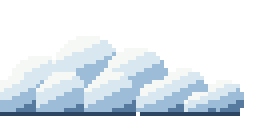
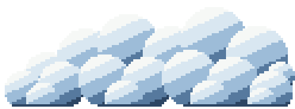
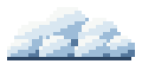

What is SPHEREx?
An infrared survey telescope. It measures every patch of sky in 102 narrow colours, so scientists can learn what things are made of, not just where they are.





Explore the changing infrared sky. Spot moving objects across time with NASA SPHEREx observations.
Sample / illustrative data in this demo
SPHEREx is a NASA space telescope that maps the whole sky in infrared light, split into many narrow colours. This demo shows how you could look through that sky for things that move or change.
An infrared survey telescope. It measures every patch of sky in 102 narrow colours, so scientists can learn what things are made of, not just where they are.
The same sky is observed again and again. If something is somewhere else, or brighter, on a later date, it may be moving or changing.
Step through dates, blink two of them, check how comparable they are, read a spectrum, and ask Navi what you are seeing.
Honest by design. Everything in this demo is sample content that shows how the tools work. Candidates are not discoveries, and nothing here is real SPHEREx data.